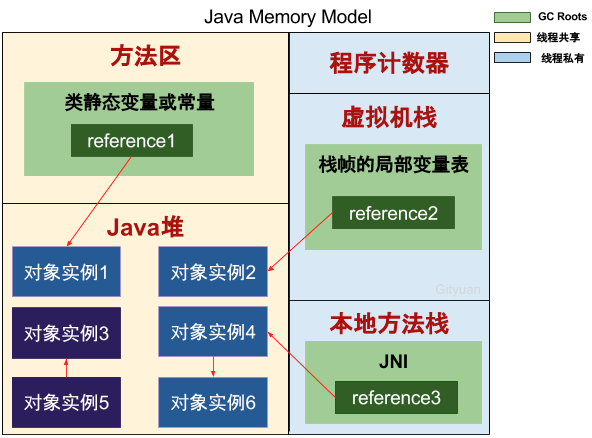

GC 原理
查看GC日志
-verbose:gc -XX:HeapDumpPath=. -Xloggc:gc.log -XX:+PrintGC -XX:+PrintGCDetails -XX:+PrintGCDateStamps -XX:+UseGCLogFileRotation -XX:+DisableExplicitGC -XX:+PrintTenuringDistribution- ``
如何分配
- 对象优先出生在 Eden 区
- 当Eden 即便经过
Minor gc也装不下Big Object或者超过配置--XX:PretenureSizeThreshold=3M那么它直接进入 Old 区
分配流程
- Eden --[
minor gc]--> s0/s1 --[big object / age<threshold]--> Old
晋升规则
- 年龄阈值
- 出生在Eden区的对象年龄为0，经过一次
Minor GC后age++，当age超过-XX:MaxTenuringThreshold=15后，晋升到Old区
- 出生在Eden区的对象年龄为0，经过一次
- 动态年龄晋升
- 为了保证
survivor区能够容纳更多的新对象，`Minor GC` 会巡查某一年龄的对象占用空间超过半数，超过这个年龄的对象会被提前放置Old区。
- 为了保证
生死抉择
- 引用计数法
- GC Roots 可达性分析算法（https://www.zhihu.com/question/21539353）
- 虚拟机栈中引用的本地对象
- 方法区中类静态属性引用的对象
- 方法区中常量引用的对象
- 本地方法栈中 JNI 引用的对象

垃圾回收算法
分代回收算法
| 算法 | YGC | OGC | Thread | 算法 | 重点 | 参数 |
|---|---|---|---|---|---|---|
| Serial | Y | 1 | 复制 | 小内存 | XX:+UseSerialGC | |
| Serial Old | Y | 1 | 标记整理 | 小内存 | ||
| ParNew | Y | N | 复制 | CPUs | XX:+UseParNewGC | |
| Parallel Scavenge | Y | 复制 | 高吞吐 | XX:+UseConcMarkSweepGC | ||
| Parallel Old | Y | 标记整理 | 高吞吐 | |||
| CMS | 标记清除 | 短停顿 |
- 分代收集算法
- 新生代
- 复制算法 `s0 -> s1` 在s0到s1复制过程中，剔除掉非存活对象，并按顺序放置到s1中；不需要考虑碎片，简单高效。
- 老年代
- 标记清除 通过GC Roots 标记需要回收的对象，在标记完成后统一清理。
- 效率低下
- 空间碎片
- 标记整理 与标记清除类似，但是在清除之前将活着的对象分割开，统一清除边界外内存。
- 标记清除 通过GC Roots 标记需要回收的对象，在标记完成后统一清理。
- 永久代
- 废弃常量
- 无用的类
- 回收条件
- 类所有实例已被回收，堆中不存在任何该类实例
- 类对应的Class对象，没有在任何地方（方法区、虚拟机栈、本地方法栈）被引用，无法通过反射访问该类
- 加载该类的 ClassLoader 已被回收
-Xnoclassgc控制关闭Class的垃圾回收，建议使用动态代理或CGLib的应用关闭该选项关闭该选项, 开启VM的类卸载功能, 以保证方法区不会溢出.
- 图示
- 新生代
| 算法 | YGC | OGC | Thread | 算法 | 重点 | 参数 |
|---|---|---|---|---|---|---|
| Serial | Y | 1 | 复制 | 小内存 | XX:+UseSerialGC | |
| Serial Old | Y | 1 | 标记整理 | 小内存 | ||
| ParNew | Y | N | 复制 | CPUs | XX:+UseParNewGC | |
| Parallel Scavenge | Y | 复制 | 高吞吐 | XX:+UseConcMarkSweepGC | ||
| Parallel Old | Y | 标记整理 | 高吞吐 | |||
| CMS | 标记清除 | 短停顿 |
| 参数 | 年轻代 | 老年代 |
|---|---|---|
| XX:+UseSerialGC | Serial | Serial Old |
| XX:+UseParNewGC | ParNew | Serial Old |
| Parallel Scavenge | Serial Old | |
| XX:+UseConcMarkSweepGC XX:CMSFullGCsBeforeCompaction | ParNew | CMS+Serial Old整理 |
| Parallel Scavenge | Parallel Old |
分区收集算法
- 年轻代
- 内存被分为多个Regions
- 存活对象被拷贝到新的Survivor区
- Young GCs会有STW事件, 进行时所有应用程序线程都会被暂停
老年代
| index | Phase | Description | | :--- | :--- | :--- | | (1) | 初始标记 (Initial Mark: Stop the World Event) | 在G1中, 该操作附着一次年轻代GC, 以标记Survivor中有可能引用到老年代对象的Regions. | | (2) | 扫描根区域 (Root Region Scanning: 与应用程序并发执行) | 扫描Survivor中能够引用到老年代的references. 但必须在Minor GC触发前执行完. | | (3) | 并发标记 (Concurrent Marking : 与应用程序并发执行) | 在整个堆中查找存活对象, 但该阶段可能会被Minor GC中断. | | (4) | 重新标记 (Remark : Stop the World Event) | 完成堆内存中存活对象的标记. 使用snapshot-at-the-beginning(SATB, 起始快照)算法, 比CMS所用算法要快得多(空Region直接被移除并回收, 并计算所有区域的活跃度). | | (5) | 清理 (Cleanup : Stop the World Event and Concurrent) | 见下 5-1、2、3 | | | 5-1 (Stop the world) | 在含有存活对象和完全空闲的区域上进行统计 | | | 5-2 (Stop the world) | 擦除Remembered Sets. | | | 5-3 (Concurrent) | 重置空regions并将他们返还给空闲列表(free list) | | (*) | Copying/Cleanup (Stop the World Event) | 选择”活跃度”最低的区域(这些区域可以最快的完成回收). 拷贝/转移存活的对象到新的尚未使用的regions. 该阶段会被记录在gc-log内(只发生年轻代
[GC pause (young)], 与老年代一起执行则被记录为[GC Pause (mixed)]. |
- 年轻代
垃圾回收算法组合
| Young GC | Old GC | 参数 | Desc |
|---|---|---|---|
| Serial | Serial Old | XX:+UseSerialGC | 停止复制算法， 虚拟机在Client模式 |
| ParNew | Serial Old | XX:+UseParNewGC | 停止复制算法， 关注缩短垃圾收集时间 |
| ParallelScavenge | Serial Old | 停止复制算法 ，关注CPU吞吐量， Server模式，适合运行后台运算 | |
| Parallel Scavenge | Parallel Old | 多线程机制，标记整理，汇总压缩，吞吐量优先 | |
| ParNew | CMS + Serial Old | 标记清除， 并发收集，等待时间很少，适合用户交互，提高用户体验 | |
| ParNew | Serial Old | 用户线程不足时采用 ParNew + Serial Old | |
| G1 | G1 取代 CMS | **** | |
| ZGC | JDK11 | 1.68ms 自动回收 all in one 区 | |
VM常用参数整理
| 参数 | 描述 |
|---|---|
-Xms |
最小堆大小 |
-Xmx |
最大堆大小 |
-Xmn |
新生代大小 |
-XX:PermSize |
永久代大小 |
-XX:MaxPermSize |
永久代最大大小 |
-XX:+PrintGC |
输出GC日志 |
-verbose:gc |
- |
-XX:+PrintGCDetails |
输出GC的详细日志 |
-XX:+PrintGCTimeStamps |
输出GC时间戳(以基准时间的形式) |
-XX:+PrintHeapAtGC |
在进行GC的前后打印出堆的信息 |
-Xloggc:/path/gc.log |
GC日志文件的输出路径 |
-XX:+PrintGCApplicationStoppedTime |
打印由GC产生的停顿时间 |
| -XX:ParallelGCThreads | 并发线程数量 |
MaxGCPauseMillis |
(毫秒数)内存回收花费的时间不超过设定值, 但如果太小将会导致GC的频率增加. |
GCTimeRatio |
(整数:0 < GCTimeRatio < 100) 是垃圾收集时间占总时间的比率 |
XX:+UseAdaptiveSizePolicy |
启用GC自适应的调节策略: 不再需要手工指定-Xmn、-XX:SurvivorRatio、-XX:PretenureSizeThreshold等细节参数, VM会根据当前系统的运行情况收集性能监控信息, 动态调整这些参数以提供最合适的停顿时间或最大的吞吐量 |
XX:+UseG1GC |
****
****